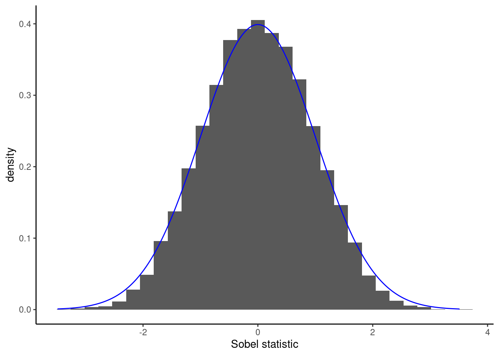
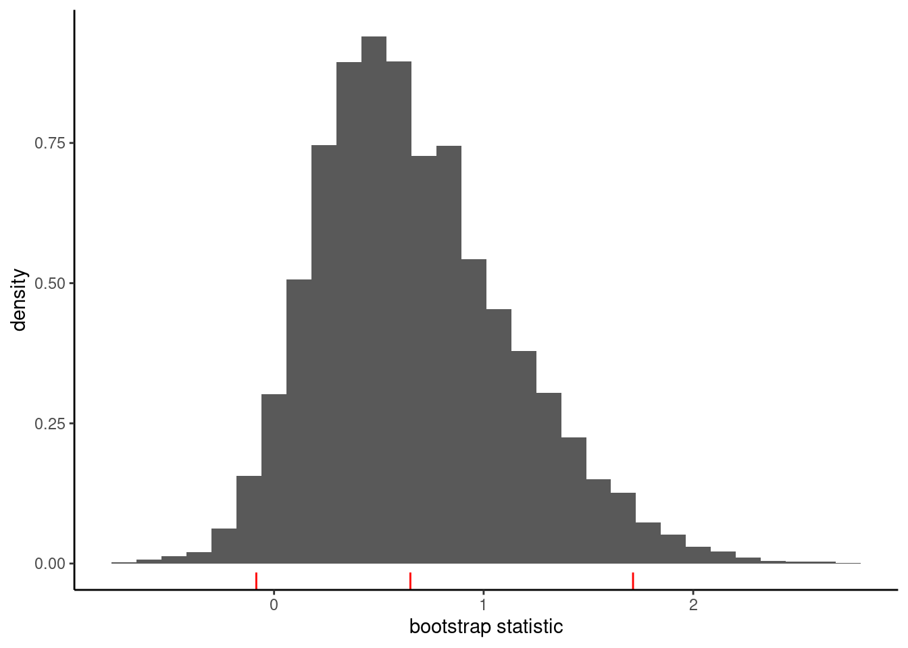
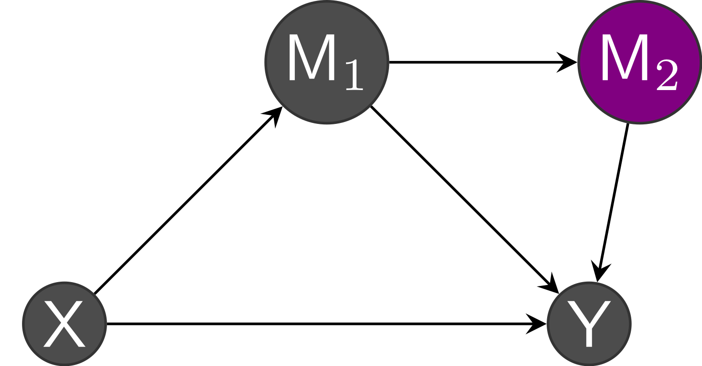
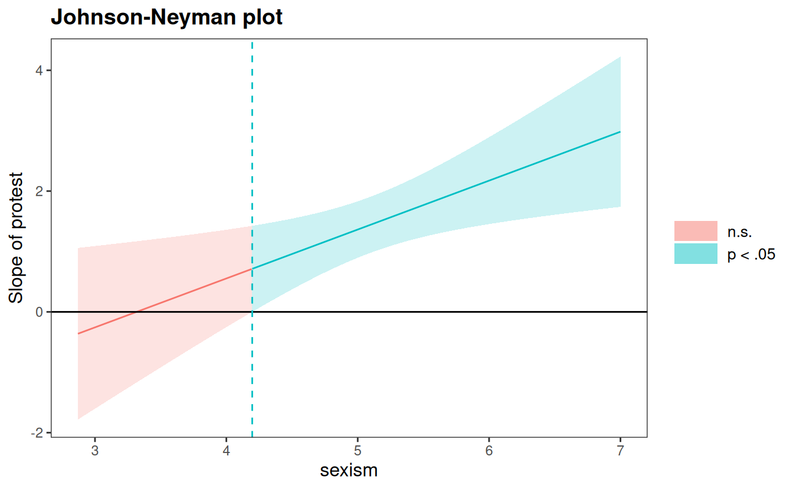

11 Causal inference
A pet peeve of statisticians is to state that correlation (or association) between two phenomena is not the same as causation. For example, weather forecasts of rain and the number of people carrying umbrellas in the streets are positively correlated, but the relationship is directed: if I intervene as an experimenter and force everyone around to carry umbrellas, it won’t impact weather forecasts nor the weather itself. The website Spurious correlations by Tyler Vigen shows multiple graphs of absurd non-causal relations, many of which are simply artefact of population growth.

Causal inference is concerned with inferring the effect of an action or manipulation (intervention, policy, or treatment) applied to an observational unit and identifying and quantifying the effect of one variable on other variables. Such action may be conceptual: we can imagine for example looking at student’s success (as measured by their grades) by comparing two policies: giving them timely feedback and encouragement, versus no feedback. In reality, only one of these two scenarios can be realized even if both can conceptually be envisioned as potential outcomes.
The content of this chapter is divided as follows. First, we discuss the logical interrelation between variables using directed acyclic graphs and focus on relations between triples defining confounders, colliders and mediators. We then describe how we can retrieve causal effects (in an abstract setting). Finally, we present the linear mediation model popularized by Baron and Kenny (1986). We focus on the hidden assumptions that can undermine causal claims of mediation.
11.1 Basics of causal inference
In an experiment, we can manipulate assignment to treatment \(a\) and randomize units to each value of the treatment to avoid undue effects from other variables. The potential outcomes applies in between-subject design because experimental units are assigned to a single treatment, whereas in within-subject designs a single ordering is presented. If we denote the outcome by \(Y\), then we are effectively comparing \((Y \mid X)\) for different values of the action set \(X\) (for example, \(X\) could be an experimental factor. We talk about causation when for treatment (\(X=j\)) and control (\(X=0\)), the distributions of \((Y \mid X=j)\) differs from that of \((Y \mid X=0)\). The fundamental problem of causal inference is that, while we would like to study the impact of every action on our response, we can only observe the outcome for treatment \(j\), written \((Y_i \mid X=j)\).1
Rather than look at the individual treatment effect, we must focus on the population effects. The most common measure of causation is the average treatment effect, which is the difference between the population averages of treatment group \(j\) and the control group, \[\begin{align*} \textsf{ATE}_j = \mathsf{E}(Y \mid X=j) - \mathsf{E}(Y \mid X=0) \end{align*}\] In experimental designs, we can target the average treatment effect if our subjects comply with their treatment assignment and if we randomize the effect and use a random sample which is representative of the population.
In many fields, the unconditional effect is not interesting enough to warrant publication free of other explanatory variables. It may be that the effect of the treatment is not the same for everyone: for example, a study on gender discrimination may reveal different perceptions depending on gender, in which case the average treatment effect might not be a sensible measure and we could look at conditional effects. We may also be interested in seeing how different mechanisms and pathways are impacted by treatment and how this affects the response. VanderWeele (2015) provides an excellent non-technical overview of mediation and interaction.
Causal inference requires a logical conceptual model of the interrelation between the variables. We will look at directed acyclic graphs to explain concepts of confounding, collision and mediation and how they can influence our conclusions.
To illustrate the relationship between variables, we use diagrams consisting of directed acyclic graph (DAG). A DAG is a graph with no cycle: each node represents a variable of interest and these are linked with directed edges indicating the nature of the relation (if \(X\) causes \(Y\), then \(X \to Y\)). Directed acyclic graphs are used to represent the data generating process that causes interdependencies, while abstracting from the statistical description of the model. This depiction of the conceptual model helps to formalize and identify the assumptions of the model. To identify a causal effect of a variable \(X\) on some response \(Y\), we need to isolate the effect from that of other potential causes. Figure 11.2 shows an example of DAG in a real study; the latter is a simplification or abstraction of a world view, but is already rather complicated.

At a theoretical level, the DAG will help identify which paths and relations to control through conditioning arguments to strip the relation to that of interest. Judea Pearl (e.g., Pearl, Glymour, and Jewell 2016) identifies three potential relations between triples of (sets of) variables:
- chains (\(X \to Z\to Y\)),
- forks (\(Z \leftarrow X \rightarrow Y\)) and
- reverse forks (\(Z \rightarrow X \leftarrow Y\)).
These are represented in Figure 11.3. In the graph, \(X\) represents an explanatory variable, typically the experimental factor, \(Y\) is the response and \(Z\) is another variable whose role depends on the logical flow between variables (collider, confounder or mediator).

In an experimental design, confounding effects from the experimental treatment \(X\) to the response \(Y\) are controlled by randomization or sample selection: all incoming arrows inside \(X\) from other variables are removed. If we include additional variables in the model which happen to be colliders, then we won’t recover the causal effect of interest. Addition of mediators will let us filter the effect due to \(Z\) from the direct effect of \(X\).
It is essential to determine via logic or otherwise (experiments can help!) the direction of the relationship, lest we run into trouble. Many statistical models commonly used, including regression models, cannot provide an answer to a problem that is philosophical or conceptual in nature. Indeed, correlation is symmetric and insufficient to infer the direction of the arrows in the directed acyclic graph.
The conclusions we will draw from statistical models depend on the nature of the relation. For example, in an observational setting, we could eliminate the effect of a confounding variable by controlling in a regression model or by stratifying for different values of the confounders in order to extract the causal estimate of \(X\) on \(Y\). However, the same strategy with a collider would backfire and we would get erroneous conclusions: Kowal (2021) reportedly found out married couples with more children were less happy. As Richard McElreath hinted, controlling for marriage (through sample selection) is incorrect since unhappy couples tend to divorce, but families with many children are less likely to divorce!
In a randomized experiment, we can check the average outcome of a manipulation by comparing groups: assuming random sampling, these conclusions can be broadly generalized to the population of interest from which the sample is drawn. However, it may be that the effect of the treatment depends on other variables: cultural differences, gender or education may change. In the statistical model, inclusion of interaction terms (typically product of the moderator variable with the factor encoding the experimental sub-condition) will allow us to estimate those differences.
11.2 Mediation
In order to do inference and tests relations, we need to add to our logical causal model represented by a directed acyclic graph a data generating mechanisms that prescribes how variables how interrelated. Our ability to establish mediation will depend on the model and a set of assumptions, some of which won’t be verifiable.
To define in full generality the treatment and mediation effect, we need to consider the potential outcome framework. Following Pearl (2014), we use \(Y_i(x, m)\) to denote the potential outcome for individual \(i\) with explanatory or experimental covariate/factor \(x\) and mediator \(m\). Likewise, \(M_i(x)\) is the potential mediator when applying treatment level \(x\).2
The total effect measures the overall impact of changes in outcome \(Y\) (both through \(M\) and directly) when experimentally manipulating \(X\), \[\begin{align*}\mathsf{TE}(x, x^*) = \mathsf{E}[ Y \mid \text{do}(X=x)] - \mathsf{E}[ Y \mid \text{do}(X=x^*)], \end{align*}\] where \(x^*\) is the factor level of the reference or control and \(x\) is another treatment value. This definition generalizes when \(X\) is a continuous variable.
The average controlled directed effect measures the flow along \(X \rightarrow Y\), disabling the pathway \(X \to M \to Y\) by fixing the mediatior: it is \[\begin{align*} \textsf{CDE}(m, x, x^*) &= \mathsf{E}[Y \mid \text{do}(X=x, m=m)] - \mathsf{E}[Y \mid \text{do}(X=x^*, m=m)] \\&= \mathsf{E}\{Y(x,m) -Y(x^*, m)\} \end{align*}\] This measures the expected change in response when the experimental factor changes from \(x\) to \(x^*\) and the mediator is set to a fixed value \(m\) uniformly over the population.
The natural direct effect, \[\begin{align*} \textsf{NDE}(x, x^*) = \mathsf{E}[Y\{x, M(x^*)\} - Y\{x^*, M(x^*)\}], \end{align*}\] is the expected change in \(Y\) under treatment \(x\) if \(M\) is set to whatever value it would take under control \(x^*\).
The natural indirect effect (\(\mathsf{NIE}\)) is the expected change in the response \(Y\) if we set our experimental value \(X\) to its control value \(x^*\) and change the mediator value which it would attain under \(x\), \[\begin{align*} \textsf{NIE}(x, x^*) = \mathsf{E}[Y\{x^*, M(x)\} - Y\{x^*, M(x^*)\}] \end{align*}\]
Armed with these definitions, we can consider the sequential ignorability assumption, which is decomposed into two components.
The first component is: given pre-treatment covariates \(W\), treatment assignment is independent of potential outcomes for mediation and outcome, \[\begin{align*} Y_i(x', m), M_i(x) \perp\mkern-10mu\perp X_i \mid W_i = w. \end{align*}\] In order words, the values taken by the mediator and by the response exist independently of the treatment assignment and don’t change.3
The second component of the sequential ignorability assumption is as follows: given pre-treatment covariates and observed treatment, mediation is independent of potential outcomes, \[\begin{align*} Y_i(x', m) \perp\mkern-10mu\perp M_i(x) \mid X_i =x, W_i = w \end{align*}\] The set of assumptions from Imai, Keele, and Tingley (2010) and Pearl (2014) are equivalent under randomization of treatment assignment, as we consider thereafter.
The total effect can be written \[\mathsf{TE}(x, x^*) = \mathsf{NDE}(x, x^*) - \mathsf{NIE}(x^*, x).\] In the linear mediation model, the reversal of argument amounts to changing the sign of the coefficient, giving an additive decomposition of the total effect as \(\mathsf{TE} = \mathsf{NDE} + \mathsf{NIE}\) (Pearl 2014).
When measuring effects in psychology and marketing, it will often be the case that the conceptual causal model includes variables that cannot be directly measured. The proxy, as in Figure 11.4, add an additional layer of complexity and potential sources of confounding.

11.3 Linear mediation model
One of the most popular model in social sciences is the linear mediation model, popularized by Baron and Kenny (1986) although the method predates this publication. Another inferential approach, suggested by Preacher and Hayes (2004), uses the same model with different test statistics and is extremely popular because it comes with software; Hayes’ PROCESS macros for SAS, SPSS and R have lead to the widespread adoption by researchers. Bullock, Green, and Ha (2010) list limitations of the approach and provide examples of instances in which the model does not have a meaningful causal interpretation.
The linear mediation model assumes that the effect of mediation and treatment is additive and that the response measurement is continuous. Consider covariates \(\mathbf{Z}\), experimental factor \(\mathbf{X}\) corresponding to treatment and postulated mediator variable \(M\), assumed continuous. Given uncorrelated unobserved noise variables \(\varepsilon_M\) and \(\varepsilon_Y\), we specify linear regression models, \[\begin{align*} M \mid X=x &= c_M + \alpha x + \varepsilon_M,\\ Y \mid X=x, M=m &= c_Y + \beta x + \gamma m + \mathbf{z}^\top\boldsymbol{\omega} + \varepsilon_Y \end{align*}\] where we use the contrast-to-reference parametrization so that the reference category for the intercept corresponds to control (group \(x^*\)) and \(x\) the other category of interest, with \(\alpha\) capturing the difference between \(x\) and \(x^*\). The model for \(Y \mid X, M\) should include additional covariates \(\mathbf{z}\) to control for confounding between \(M\) and \(Y\) if the latter is suspected.
The parameters can be interpreted as the direct (\(\beta\)), indirect (\(\alpha \gamma\)) and total (\(\beta + \alpha \gamma\)) effects. To see this, we plug the first equation in the second and obtain the marginal model for \(Y\) given treatment \(X\), \[\begin{align} Y \mid X=x &= \underset{\text{intercept}}{(c_Y + \gamma c_M)} + \underset{\text{total effect}}{(\beta + \alpha\gamma)}\cdot x + \underset{\text{error}}{(\gamma \varepsilon_M + \varepsilon_Y)}\\ &= c_Y' + \tau X + \varepsilon_Y' \end{align}\] These parameters can be estimated using structural equation models (SEM), or more typically by running a series of linear regression (ordinary least squares).
The sequential ignorability in the linear mediation models boils down to “no unmeasured confounders” in the relations \(X \to Y\), \(X \to M\) and \(M \to Y\): the first two are satisfied in experimental studies due to randomization, as shown in Figure 11.6. This means \(\varepsilon_M {\perp\mkern-10mu\perp} \varepsilon_Y\) must be independent and, as a result, error terms should also be uncorrelated.
In the linear mediation model, we can estimate the conditional direct effect corresponding to the product of coefficients \(\alpha\gamma\). Absence of mediation implies the product is zero. Baron and Kenny (1986) recommended using Sobel’s test statistic, a Wald-test of the form \[\begin{align*} S = \frac{\widehat{\alpha}\widehat{\gamma} - 0}{\mathsf{se}(\widehat{\alpha}\widehat{\gamma})} = \frac{\widehat{\alpha}\widehat{\gamma}}{\sqrt{\widehat{\gamma}^2\mathsf{Va}(\widehat{\alpha}) + \widehat{\alpha}^2\mathsf{Va}(\widehat{\gamma}) + \mathsf{Va}(\widehat{\gamma})\mathsf{Va}(\widehat{\alpha})}} \stackrel{\cdot}{\sim}\mathsf{No}(0,1) \end{align*}\] where \(\widehat{\alpha}\), \(\widehat{\gamma}\) and their variance \(\mathsf{Va}(\widehat{\alpha})\) and \(\mathsf{Va}(\widehat{\gamma})\) can be obtained from the estimated coefficients and standard errors.4 The Sobel’s statistic \(S\) is approximately standard normal in large samples, but the approximation is sometimes crude.
In the linear mediation causal model, we can estimate the total causal effect of \(X\), labelled \(\tau\), by running the linear regression of \(Y\) on \(X\) as there is no confounding affecting treatment \(X\) in a completely randomized experimental design. This strategy isn’t valid with observational data unless we adjust for confounders. Under no unmeasured confounders and linearity, the product \(\alpha\gamma\) is also equal to the difference between the total effect and the natural direct effect, \(\tau - \beta\).
Baron and Kenny (1986) suggested for \(X\) and \(M\) continuous breaking down the task in three separate steps:
- fit a linear regression of \(M\) on \(X\) to estimate \(\alpha\)
- fit a linear regression of \(Y\) on \(X\) to estimate \(\tau\)
- fit a linear regression of \(Y\) on \(X\) and \(M\) to estimate \(\beta\) and \(\gamma\).
In the “Baron and Kenny (1986) approach”, we test \(\mathscr{H}_0: \alpha=0\), \(\mathscr{H}_0: \tau=0\) and \(\mathscr{H}_0: \gamma=0\) against the two-sided alternative. This approach has caveats since mediation refers to the relation \(X \to M \to Y\), so we only need to consider (joint tests of) \(\alpha\) and \(\gamma\) (the total effect could be zero because \(\beta = -\alpha\gamma\) even if there is mediation). Zhao, Lynch, and Chen (2010) review the typology of mediation.
- complementary mediation when both direct and indirect effects are of the same sign and non-zero.
- competitive mediation when direct and indirect effects are of opposite signs.
- indirect-only mediation when the direct effect of \(X \to Y\) is null, but the effect \(X \to M \to Y\) isn’t.
Previous definitions popularized by Baron and Kenny (1986) still found in old papers include “full mediation” for instances where \(\beta=0\) and partial mediation if the direct effect is less than the total effect, meaning \(\beta < \tau\).
To see this, let’s generate data with a binary treatment and normally distributed mediators and response with no confounding (so the data generating process matches exactly the formulation fo Baron–Kenny. We set \(\alpha=2\), \(\beta = 1/2\) and \(\gamma=0\). This is an instance where the null is true (\(X\) affects both \(M\) and \(Y\)).

If we knew exactly the model that generated \(X\), \(M\), \(Y\) and the relations between them, we could simulate multiple datasets like in Figure 11.5 with \(n=20\) observations and compare the test statistic we obtained with the simulation-based null distribution with \(\alpha\gamma=0\). In practice we do not know the model that generated the data and furthermore we have a single dataset at hand. An alternative is the bootstrap, a form of simulation-based inference. The latter is conceptually easy to understand: we generate new datasets by resampling from the ones observed (as if it was the population). Since we want the sample size to be identical and our objective is to get heterogeneity, we sample with replacement: from one bootstrap dataset to the next, we will have multiple copies, or none, of each observation. See Efron and Tibshirani (1993) and Davison and Hinkley (1997) for a more thorough treatment of the bootstrap and alternative sampling schemes for regression models. The nonparametric bootstrap procedure advocated by Preacher and Hayes (2004) consists in repeating the following \(B\) times:
- sample \(n\) observations with replacement, i.e., a tuple (\(X_i, M_i, Y_i)\), from the original data .
- compute the natural indirect effect \(\widehat{\alpha}\cdot\widehat{\gamma}\) on each simulated sample
For a two-sided test at level \(\alpha\), compute the \(\alpha/2\) and \(1-\alpha/2\) quantiles of the bootstrap statistics \(\{\widehat{\alpha}_b\widehat{\gamma}_b\}_{b=1}^B\). For example, if the level is \(\alpha=5\)% and we generate \(B=1000\) bootstrap samples, the percentile confidence intervals bounds are the 25th and 975th ordered observations.
Nowadays, the asymptotic approximation (sometimes misnamed delta method5) has fallen out of fashion among practitioners, who prefer the nonparametric bootstrap coupled with the percentile method.

The nonparametric percentile bootstrap confidence interval for \(\alpha\gamma\) is [-0.08, 1.71] and thus we fail to reject the null hypothesis \(\mathscr{H}_0: \alpha \gamma=0\).
The inference scheme is popular, but we could also rely on different models and use the definitions of the causal effects to perform simulation-based inference; see Appendix D of Imai, Keele, and Tingley (2010). The latter fit two models for the mediator and the outcome, then estimate parameters. In large samples, the parameter estimators are approximately multivariate Gaussian and we can simulate parameters, use the parametric model to generate new data and potential outcomes. The average causal mediation effect can be estimated empirically based on the simulated potential outcomes.
11.3.1 Model assumptions
We can unpack the model assumptions for the linear mediation model.
- The no unmeasured confounders assumption. Plainly stated, there are no unobserved confounders and thus the error terms \(\varepsilon_M\) and \(\varepsilon_Y\) are independent. Additionally, when we consider observational data, we must make sure there is hidden confounders affecting either the \(M \to X\) and the \(X \to Y\) relation, as shown in Figure 11.6. We can include covariates in the regression models to palliate to this, but we must only include the minimal set of confounders (and no additional mediator or collider chain).

Another problem would be to claim that variable \(M\) is a mediator when in truth part of the effect on the outcome is due to change in another mediator. Figure 11.7 shows an instance with no confounding, but multiple mediators, say \(M_1\) and \(M_2\): the latter mediates the relation \(M_1 \to Y\). The linear mediation model would capture the total effect of \(M_1\), but it would be incorrect to claim that the mediation effect on \(X\) is due to \(M_1\).

- The linearity assumption implies that the linear models are correctly specified and that the effect of the covariates are linear. This means that, ceteris paribus, the effect of an increase of one unit of \(M\) on \(Y\) is the same regardless of the value of \(M\). It also doesn’t depend on the level of other variables (no interaction). If the model isn’t properly specified, the linear model coefficients will capture the best linear predictor given the design and the coefficients may not be meaningful.
The linearity assumption also implies that the effect is the same for every individual, so there is no treatment heterogeneity or measurement error which could lead to attenuation bias.
Following Bullock, Green, and Ha (2010), we index the regression equations by individual \(i\) \[\begin{align*} M_i\mid X_i=x &= c_M + \alpha_i x + \varepsilon_{Mi},\\ Y_i \mid X_i=x, M_i=m &= c_Y + \beta_i x + \gamma_i m + \mathbf{z}_i^\top\boldsymbol{\omega} + \varepsilon_{Yi} \end{align*}\] If \(\alpha_i\) differ from one observation to the next, the average estimated by the regression could be positive, negative or null. Even in the latter case, we could have \(\gamma_i\) and \(\alpha_i\) positive for some observation, or both negatives so that they cancel out even if there is complementary mediation.
We could easily expand the model to include nonlinear effects (not for the treatment or mediator) and potential interactions, but the linear model approach will be limited. Imai, Keele, and Tingley (2010) details a more general approach for parametric models based on simulations, as well as a nonparametric approach. Both are less restrictive than the Baron and Kenny (1986) model.
The main benefit of experimental designs is that it deconfounds the relation between treatment and other variables, but adding spurious variables could create feedback and lead to inconsistent conclusions. It’s not clear that the mediator can be manipulated experimentally, and even if it could be to estimate the \(\gamma\), one must make sure the relation is the same absent of \(X\). For example, we could estimate the indirect effect term by manipulating jointly (if possible) (\(X, M\)) but even then the linearity assumption must hold for the estimates to correspond to our linear causal mediation model.
11.3.2 Example
Study 2 of Lee and Choi (2019) focus on inconsistency of photos and text descriptions for online descriptions and how this impact the product evaluation.
The experimental variable is the consistency of the product description and depiction, with fluency leading to “processing disfluency” that is expected to impact negatively judgment ratings. Familiarity with the product brand and product is included as covariate in both mediator and outcome model (see Table 1 of Lee and Choi (2019)).6
data(LC19_S2, package = "hecedsm")
YsMX <- lm(prodeval ~ fluency + consistency + familiarity,
data = LC19_S2)
MsX <- lm(fluency ~ consistency + familiarity,
data = LC19_S2)
|
|
We can extract the effects directly from the outcome: the natural indirect effect estimate is \(\widehat{\alpha}\widehat{\gamma} = 0.48 \times 0.60\) and the direct effect is \(\widehat{\beta} = 0.29\).
To get confidence intervals, we can use the mediate package (Tingley et al. 2014). The function requires the parametric model for the mediation and outcome, as well as a series of specification (the number of bootstrap samples, the type of confidence interval, the names of the levels for categorical treatment, etc.)
set.seed(80667)
library(mediation, quietly = TRUE)
linmed <- mediate(
model.m = MsX,
model.y = YsMX,
treat = "consistency",
mediator = "fluency",
sims = 5000L,
boot = TRUE,
boot.ci.type = "bca", # bias-corrected and accelerated (bca)
control.value = "inconsistent",
treat.value = "consistent")| estimate | lower 95% CI | upper 95% CI | p-value | |
|---|---|---|---|---|
| ACME | 0.286 | 0.025 | 0.615 | 0.037 |
| ADE | 0.287 | -0.166 | 0.732 | 0.218 |
| total effect | 0.573 | 0.037 | 1.080 | 0.030 |
| prop. mediated | 0.499 | 0.211 | 5.956 | 0.057 |
Using the summary method, we can print the table of estimates and confidence intervals. We can see that the results are consistent with those reported in the article.
11.4 Moderation and interactions
The causal effect \(Y \mid \mathsf{do}(X)\) may be a misleading summary if another variable modifies the relation: for example, the perception of gender discrimination or racism may depend on the person background and experience and this may impact the effect of the manipulation. Such variables, say \(W\), thus have an interactive effect with the experimental factor \(X\), termed moderator in psychology.
In a blocking design, covariates are included that have an impact on the outcome to filter out variability, but with the assumption that they do not influence the effect of treatment. With moderators, we include the interaction.
If we have an experimental factor \(X\) which is binary or categorical, the resulting model is a simple analysis of variance model and we can test the significance of the interaction term to assess the moderating effect of \(W\).
If \(W\) is a mean-centered continuous variable and \(X\) a categorical variable with \(k=1, \ldots, K\) levels using the sum-to-zero parametrization, the linear model \[\mathsf{E}\{Y \mid \mathsf{do}(X) = k, W\} = \mu + \alpha_k + (\beta + \gamma_k)W + \varepsilon,\] includes different slopes for \(W\) in each experimental group, as well as different intercepts (\(\mu + \alpha_k\)) for group \(k\).
As an example, we consider Garcia et al. (2010). These data are from a study on gender discrimination. Participants were put with a file where a women was turned down promotion in favour of male colleague despite her being clearly more experimented and qualified. The authors manipulated the decision of the participant to this decision, either choosing not to challenge the decision (no protest), a request to reconsider based on individual qualities of the applicants (individual) and a request to reconsider based on abilities of women (collective). All items were measured using scales constructed using items measured using Likert scales ranging from strongly disagree (1) to strongly agree (7).
The postulated mediator variable is sexism, the average of 6 Likert scales for the Modern Sexism Scale assessing pervasiveness of gender discrimination. We consider participants’ evaluation of the appropriateness of the response of the fictional character.
We fit the linear model with the interaction and display the observed slopes
data(GSBE10, package = "hecedsm")
lin_moder <- lm(respeval ~ protest*sexism,
data = GSBE10)
summary(lin_moder) # coefficients
car::Anova(lin_moder, type = 3) # tests| term | sumsq | df | statistic | p.value |
|---|---|---|---|---|
| protest | 6.34 | 2 | 2.45 | .091 |
| sexism | 6.59 | 1 | 5.09 | .026 |
| protest:sexism | 12.49 | 2 | 4.82 | .010 |
| Residuals | 159.22 | 123 |

Because of the interaction, comparing the levels of the experimental factor only makes sense if we fix the value of sexism (since the slopes are not parallel) and won’t necessarily be reliable outside of the range of observed values of sexism. We could look at quantiles and differences at the mean sexism,7 or one standard deviation away.
We may be interested in the range of values of the predictor \(W\) for which the difference between treatments is not statistically significant if we only have a binary treatment. The Johnson–Neyman method (Johnson and Neyman 1936) considers this range, but this leads to multiple testing problems since we probe the model repeatedly. Esarey and Sumner (2018) offer a method that provides control for the false discovery rate.
To illustrate the method, we dichotomize the manipulation pooling individual and collective protests, since these are the most similar.
library(interactions)
db <- GSBE10 |>
dplyr::mutate(
protest = as.integer(protest != "no protest"))
lin_moder2 <- lm(respeval ~ protest*sexism, data = db)
jn <- johnson_neyman(
model = lin_moder2, # linear model
pred = protest, # binary experimental factor
modx = sexism, # moderator
control.fdr = TRUE,
mod.range = range(db$sexism)) 
The cutoff value is 4.20 with control for the false discovery rate and 4.15 without. The interval is not extended beyond the range of value for sexism, as these are not possible given the Likert scale (which starts at 1).
In this example, the moderator is not experimentally manipulated, but it could be. More complicated mediation model could include interactions between treatment effects or moderators and covariates, with external variables, leading to moderated mediation.
Interactions can be considered for pretty much any statistical model, but the usual assumptions need to hold for inference to be approximately valid.
In a within-subject design, the analog is that a single ordering can be presented.↩︎
The notation is important to distinguish between association \(Y \mid X\) when observing \(X\) from manipulations or interventions, \(Y \mid \mathsf{do}(X)\) and counterfactuals \(Y(X)\).↩︎
The dependence on \(W\) is used for situations where we can perform randomization based on pre-treatment assignment (i.e., we specify a mechanisms that is not equal based, but the probability of assignment is known from each individual).↩︎
Sobel derived the asymptotic variance using a first-order Taylor series expansion assuming both \(\alpha\) and \(\gamma\) are non-zero (hence the tests!)↩︎
The latter is the name of the method used to derive the denominator of Sobel’s statistic.↩︎
Incidentally, reporting the coefficients allows in a Table allows one to retro-engineer the model and ensure reproducibility.↩︎
This is the default with
emmeans↩︎